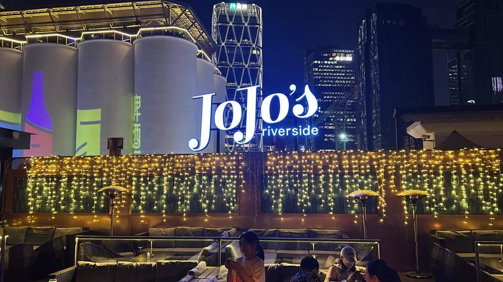
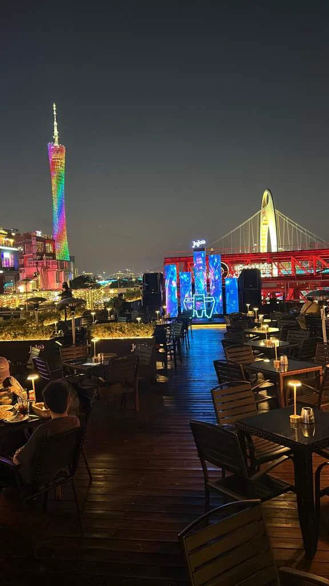
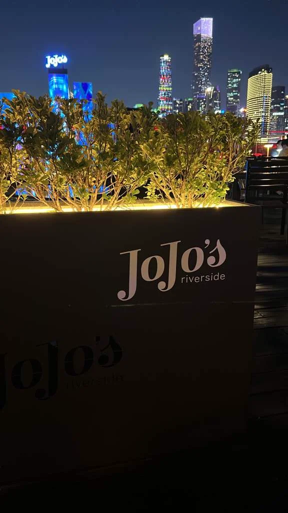
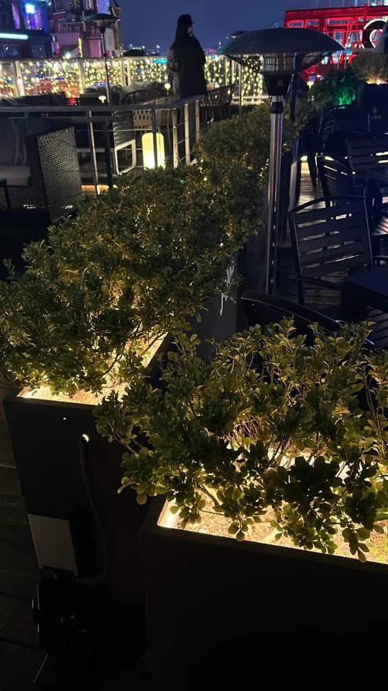

Elevating Outdoor Hospitality: A Site Visit to JoJo's Riverside Rooftop
Lighting, greenery, and durable design for wind-exposed rooftop environments with skyline views.

JoJo's Riverside Rooftop sits at the intersection of city lights and open sky — a stage for outdoor hospitality where ambience must endure wind and the demands of branding. In a recent site visit, we explored lighting and greenery concepts tailored for a wind-exposed rooftop that still commands a dramatic skyline backdrop. The goal is clear: craft a signature space that elevates branding while keeping guests safe, comfortable, and engaged with the view.
Site Observations: What Works in Wind and Light
Fire-retardant, UV-stable faux greenery provides longevity without the maintenance of live plants. For rooftops where gusts are a constant, scalable wall concepts give you a signature green wall and clear opportunities for logo exposure without compromising sightlines.
- Wind-conscious greenery: Materials should resist wind uplift, resist fading, and be easy to clean. Our preferred approach uses modular panels that can be anchored to wind-rated framing.
- Lighting that travels with the space: Integrated lighting should highlight foliage and architectural features while avoiding glare that could impact guests or obscure the view.
- Sightlines preserved: Any greenery or lighting must frame the skyline rather than block it. The aim is a layered composition where the cityscape remains the hero backdrop.


Concepts in Play: Designing for Durability and Brand Impact
Proposed concepts center on a bold, six-metre-wide green wall that acts as a brand centerpiece, with lighting engineered to showcase the logo without dominating the skyline.
- Green wall as signature centerpiece: A six-metre-wide green wall serves as the visual anchor, with either backlit or front-lit logo treatment. The wall is framed by wind-rated supports designed to withstand rooftop gusts.
- Wind-aware plant layout: Palm and olive trees complement the greenery wall, positioned with wind exposure in mind. Use modular, low-maintenance planters that can be reconfigured as needs change.
- Ambient, layered lighting: A combination of uplighting, wall washes, and subtle path lighting creates a warm, event-ready atmosphere without overpowering views.

Practical Designer & Contractor Recommendations
- Materials and finishes: Choose faux greenery with flame retardants and UV stability. Select corrosion-resistant metals and weatherproof coatings for planters and mounting.
- Wind loads and mounting details: Use wind-rated framing and anchors suitable for rooftop installations. Test all fixtures and supports for uplift and vibration.
- Lighting integration: Use weather-rated IP66+ fixtures with low-profile silhouettes and adjustable aiming angles. Consider wiring accessibility for seasonal maintenance.
- Sightline preservation: Keep design elements lower than line-of-sight blocks to the city skyline. Use wall-mounted or wall-adjacent fixtures to minimise obstruction.
- Maintenance and scalability: Plan for easy maintenance cycles and modularity so the design can evolve with branding or seasonal campaigns without a full rebuild.
Closing Thoughts
This is a design-forward yet pragmatic approach to outdoor rooftop venues. The combination of wind-resilient greenery, robust logo-friendly lighting, and modular planters positions JoJo's Riverside Rooftop to deliver a memorable guest experience that remains faithful to brand identity even in challenging weather.
"If you are a designer or contractor, we would love your feedback on the proposed materials, mounting strategies, and layout. Share your experiences with wind-exposed rooftop projects and tell us what you would adjust for real-world conditions." — LaySun Editorial
Ready to design a rooftop that lasts?
LaySun wind-rated faux greenery and modular planters are trusted by hospitality venues worldwide.
Green Wall Systems Hospitality Solutions Request a Quote →